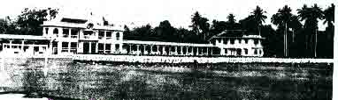
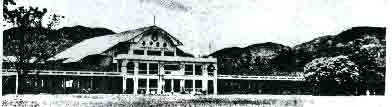

In the past 100 years, Chung Ling has taken the lead and expanded, seeking improvement in quality. In the meantime, after the catastrophe of the Second World War, it also suffered from the transformation of personnel, and it has weathered the historic ups and downs. In the transformation of the times, Chung Ling High School still heads forward and grows day by day. It is worthy of the public, and today it has become one of the few universities in Malaysia.
February 9th, 1917 is the day of the birth of the school. At the beginning of the establishment. There is a national class first, and there are only 81 students. The school site is located behind the Penang Tai Niu 18th and above the Newspaper Society. In the following year, we moved to the 60th building of Zhong Road.
In 1920, the number of students was increased, and then secondary schools were organized. In 1923, the national class was suspended, and only high school and junior high school were held. At that time, the number of students increased to one hundred and four.
The Forest Resources Heritage Trustee donated the left-hand building of the middle school building in 1925. In 1931, the Alumni Association also purchased the right-hand building of the building and make it as a school hostel. In the following year, the government subsidized the left column school building as a laboratory and the right column as a library. The increase in the number of students is the rental of the right column of the school building.
Due to the reputation of the school, the number of students have grew. The board of directors decided to launch a new school building in Ganguang. The new school building started in early October 1934 and was completed a year later. We moved to the new school building in October. When the new school building was built, the Li Ze Society first donated 10,000 yuan to build a hall. After the war, the hall was rebuilt and named "Huai Ze Tang".
In 1940, the outbreak of the Second World War affected the situation in Penang. The school temporarily leased the 41st building of Hong Mao Road and moved it to the temporary school building on September 9. The No. 102 Che Shui Road was a temporary dormitory. After four months, we moved back to the original school. In the following year, the original school was requisitioned as a British military hospital, so we was moved to the Hong Mao Road building to continue the class. In December of the same year, the Japanese invaded the South, the island of Penang instrusted, and Chung Ling announced that it had ceased.
After three years and eight months of darkness, we lost the lives of many dear teachers and countless classmates. On 1945 of August 15, Japan announced its surrender, the war ended, and Malaysia regained its light. Chung Ling established the Resume School Committee to prepare for the revival plan. On December 8 of the same year, the ceremony of the Resume School was officially held, with more than 800 students.
After resuming the school, the school affairs will immediately restore the old concept. Due to the sharp increase in students, the expansion of school buildings is an urgent task. The board of directors added 16 additional classrooms and remodeled the hall. The construction of student residences and the dining room for thousands of people were also announced. The school looks brand new.
Just as Chung Ling was actively building, the sound of screaming was heard on a sunny day. President Chen Chong En was suddenly killed on February 4, 1952. Chung Ling suddenly lost the savvy and capable principal. This is a big loss for our school. All parties deeply deplore. After the death of President Chen, Mr Wang Yong Nian was appointed as the ninth principle of Chung Ling.
After the school was restructured in 1956, the school name was renamed "Chung Ling National High School" (hereinafter referred to as the General School). In 1961, in view of the restrictions imposed by the over-age students on the school, there was no way to enter the school, and the creation of a non-subsidized “Chung Ling Independent Middle School” (hereinafter referred to as Independent School)
A Science museum and Library finished building in March 1962. The pavilion was opened at the main campus of Penang. The second alumni back to school day was held on the opening day. The guests gathered, the situation is very prosperous.
In 1967, the Penang Headquarters was allowed to open a pre-university course. This is the pioneering work of Ben Bang Chinese School. In order to cope with the demand for craft education in China, the board of directors invested in the construction of a new type of technology building, and then revived the university's pre-requisite class, named "Jing Xiu Yuan." Completion was completed in early 1971. In the same year, Ye Rong and his alumni took over the post of principal from the presidency of Wang Yong Nian who retired at the end of 1970, for eight years.
In 1973, the Independent school was allowed to open a pre-university course to provide opportunities for many independent schools with aspirations to enter the university.
In April 1977, in order to cope with the increase in the number of pre-schools, the independent school students were able to study in a better environment and equipment. The board of directors built a pre-renovation building in 1977. There are six large classrooms and two teacher offices, which cost nearly 300,000 yuan.
In July 1980, in order to cope with the rapid development of the school, the Board of Directors raised nearly one million Ringit Malaysia to expand the Penang Headquarters school building and upgraded the original single-story classroom in the front row of the school building to third floor. There are 30 classrooms and make the school's appearance more magnificent.
In 1983, the Penang General School, in order to make school administration more efficient, was the implementation of the "Computerization of School Administration" program, which set a precedent for the administrative computerization of the state schools.
In 1985, in order to improve equipment and provide a good environment for study, the board of directors decided to expand a three-story modern building, including a multi-purpose hall, library, physical and chemical lab, faculty office and art room. Two million Ringgit Malaysia are used for this project. The expansion is scheduled to be completed in 1990. This symbolizes independence and further moves forward.
With the progress of the country, the population of Butterworth has expanded rapidly, and the number of primary chinese school graduates has increased year by year. However, there is no middle school in the region that has the fine traditions of Chinese schools to accommodate. After repeated requests and encouragement by the enthusiastic Chinese educators in the province, the board of directors, after repeated research, adhered to the purpose of the woods and trees, and decided to accept the public. In 1976, it began to set up the construction of Chung Ling Butterworth Branch High School in Butterworth. After many years of waiting, many difficulties were eliminated, and the application for the creation of the school was finally approved by the Education Bureau.
On April 9, 1983, the Board of Directors held a meeting in the auditorium of the Penang Chung Ling Alumni Association in Penang, and invited the enthusiastic Chinese people of Penang to attend. After heated discussions, the unanimous resolution of the establishment of the "Chung Ling Butterworth Brunch High School", shouldering the arduous task of establishing a school.
The school building plan is divided into two phases. The first phase of the project started construction on December 25, 1984. In the cooperation with the construction committee, the social enthusiasm of Chinese educators and alumni enthusiastately responded, and the school building work was smooth.
In order to start the course, the first phase of the school building was completed at the end of 1985. The school premises include: 24 classrooms on the 4th floor of Block A; 6 science rooms on the 4th floor of Block B, 6 craft rooms and 4 classrooms; Block C is multi-purpose hall and can accommodate about 1500-seat and the four-floor of administrative building (with the principal's office, the Academic Affairs Office, the conference room, the teacher's office and library, the music room, etc.); The D-block is a two-storey canteen; A sports field that fulfil international standards and two outdoor basketball courts.
On the 6th of January 1986, Chung Ling Butterworth Brunch High School are officially started classes and accepted the first batch of 350 male and female students enrolled in school. Since then, many Chinese graduated primary school students in Butterworth region have tried to enter the Chinese school tradition. The wish of the national high school.
In order to make Chung Ling Branch High School become more independent and to facilitate future development, the board of directors of the Central Committee of Chung Ling and the branch committee of the branch have held meetings to make detailed research on the above issues and decided to petition the education authorities. The name of Chung Ling Branch High School was changed to Chung Ling Butterworth High School. In the first month of 1987, the government officially responded to the above-mentioned application, and in the future, the name of "Chung Ling Butterworth High School" will continue to develop towards the established school policy.
Since the new KBSM course was implemented in the first and middle grades in early 1989, including the Life Skills Division (including crafts, business, agriculture and housekeeping), teaching these subjects requires a place suitable for improving the equipment.
In addition, the original classrooms will not be available in 1990. After discussion at the meeting of the Commission, it was urgent to proceed with the second phase of the school building plan. Therefore, it was decided to start the school. The projects involved include 16 classrooms on the 4th floor of Block E and 8 classrooms on the 4th floor of Block F. In early 1991, the two teaching buildings were announced to be completed. A total of two phases of construction projects cost a total of more than eight million yuan. At this point, the entire plan for the Establishment of Chung Ling Butterworth High School was announced. If the construction committee is the same person, it will have to unload the burden. On December 23, 1991, the Construction Committee held a meeting to discuss the organization of the board of directors of the board of directors of Chung Ling Butterworth High School. Then, according to the charter, 40 directors were elected together with the parents, and the alumni representatives were each of the three members. People, composed of the "Chung Ling Butterworth High School Board of Directors", took on the task of developing Chung Ling Butterworth in the future.
In 1990, in order to adapt to the needs of the environment, the school decided to implement full-time and dual-track system. This measure has been greatly praised by the community, which has further enhanced the confidence of parents and prompted many parents to send their children to the school. As a result, the number of individuals in the school has soared and the classrooms are no longer available. To this end, the Board of Directors convened a meeting on May 12, 1992 to set up the "Chung Ling Private High School Third Phase Expansion School Building Working Committee" to build a five-story teaching building with 28 classrooms. After more than two years of hard work, the third phase of the expansion was finally implemented. It was opened in February 1996. The entire project has a total cost of 2.5 million yuan.
The left-hand classroom based in Penang’s main school was damaged due to the impact of the embedding system giant tube in the political city of Penang. It was classified as a dangerous building and was suspended. As for the classroom on the right side, it is also old and unsuitable for teaching. The board of directors met on October 18, 1994 and decided to dismantle it and then rebuild it into two four-story buildings with a total of 48 new classrooms at a cost of 3.5 million yuan. New classrooms on the left and right sides have been built. The twenty-four new classrooms on the right were completed at the end of 1998 and were launched in the following year. The twenty-four new classrooms on the left were also opened in 2000.